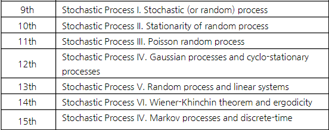

Stochastic(Random) Process
Sequence of R.V.
R.V. with independent parameter \(t\)
A discrete-time random process \(X_n(X[n])\)
A continuous time random process \(X_t(X(t))\)
시간이 \(t=t_1\)로 고정돼있으면, \(X(t_1)\)은 random variable 이다.
R.P. sampling → R.V.
- Statistics of a R.P.
Suppose \(X(t_1)\) and \(X(t_2)\) are the R.V.’s measured at \(t=t_1\) and \(t_2\), then
Marginal density function: \(f_X(x,t_1)\)
Joint density function: \(f_{X(t_1)X(t_2)}(x,t_1)\)
Mean or expected value of a R.P.: \(E[X(t)]=\eta (t)\)
Covariance function: \(C_X(t_1,t_2)=E[(X(t_1)-\eta (t_1))(X(t_2)-\eta (t_2))^*]\)
R.P.의 평균은 여전히 시간 \(t\) 에 대한 함수이다. \(\eta (t)\)
또한, autocorrelation, covariance, and distribution 모두 시간에 dependent 하다.
Stationary Random Process
Random process 그 자체로는 정상성(stationarity)에 대한 어떤 가정도 하지 않으며 시간에 따라 통계적 특성(평균, 분산 등…)이 변할 수 있다.
정상 확률 과정(stationary random process): 시간이나 공간의 변화에 따라 그 통계적 특성이 일정하게 유지. 즉, 어느 시간에서 측정하던지 통계적 특성(평균, 분산, 공분산 등)이 일정
R.P.의 분포는 시간에 의존하는 함수인데 몇몇 케이스에서는 시간에 독립. 이러한 케이스가 stationary process
- Strict-Sense Stationary(SSS)
확률 과정의 모든 통계적 성질이 시간 이동에 대해 불변
\(f_X(x,t)=f_X(x)\)
\(f_X(x_1,x_2,t_1,t_2)=f_X(x_1,x_2,0,\tau),\quad \tau=t_2-t_1\)
\(f_X(x_1,x_2,...,x_n,t_1,t_2,...,t_n)=f_X(x_1,x_2,...x_n,t_1+c,t_2+c,...,t_n+c)\)
- Wide-Sense Stationary(WSS)
평균이 시간에 독립, 자기상관 함수가 두 시점 간의 시간차이에만 의존
과정 \(X(t)\) 의 기대값 \(E[X(t)]\) 이 모든 시간 \(t\) 에 대해 상수. 즉, \(E[X(t)]=\mu\), 여기서 \(\mu\)는 상수
두 시간 포인트 \(t\) 와 \(t+\tau\) 사이의 자기상관은 \(\tau\) 에만 의존하며 \(t\) 의 절대적 위치에는 의존하지 않는다. 즉, \(E[X(t_1)X^*(t_2)]=E[X(t+\tau)X^*(t)]=R_X(\tau)\)
SSS는 WSS지만 WSS는 SSS가 아닐 수 있다.
Freezing \(t=t^*\) in a random process \(X(t)\) results in a random variable, i.e., \(X(t^*)\) is a random variable. → TRUE
? Stationary를 가정하면 좋은 점? (GPT)
예측 가능성: Stationary(정류) 신호는 시간에 따라 통계적 특성이 변하지 않기 때문에 과거 데이터를 이용하여 미래를 예측하기가 상대적으로 쉽다. 예측 모델 설계에 유리
데이터 분석 용이: 자기상관 함수(ACF)나 전력 스펙트럼 밀도(PSD)를 계산할 때 시간이 지남에 따라 평균이나 분산이 변하지 않는다고 가정할 수 있기 때문에 분석이 더 쉽고 명확
모델 단순화: ARMA나 ARIMA 같은 시간에 따른 데이터 모델들은 stationary(정류성) 가정 하에서 더 잘 적용. stationary 하지 않은 데이터를 분석할 때는 데이터를 정류화(예: 차분을 통해) 해야 하지만 정류 데이터는 이러한 추가 변환 과정이 없어서 모델링이 단순
이론적 분석의 용이성: 많은 신호 처리 이론과 방법들이 정류성을 가정하고 개발됨. 필터 설계, 스펙트럼 분석, 회귀 분석 등의 방법들이 정류 신호에 대해 쉽게 적용될 수 있다.
안정성: Stationary 데이터는 시간에 따른 특성 변화를 고려하지 않아도 되므로, 시스템의 안정성을 분석하고 보장하는 데 유리. 이는 시스템의 설계와 유지보수에 있어서 중요한 장점
Poisson Process
포아송 분포는 단위 시간에서 어떤 사건이 몇 번 발생할 것인가를 표현하는 이산 확률 분포.
포아송 프로세스에서 시간 \(t\) 내에 사건 발생 횟수 \(N(t)\)는 포아송 분포를 따른다.
A process of arrivals in continuous time is called Poisson process with rate \(\lambda\) if following two conditions hold:
interval of length \(t\)에서 발생하는 사건의 수는 \(\text{Pois}(\lambda t)\) random variable이다.
겹치지 않는 구간에서의 발생하는 사건의 수는 서로 독립이다. 예를 들어 구간 (0,10), [10, 12), [15,\(\infty\))는 서로 독립이다.
Poisson process: t 시간동안 발생하는 사건의 수를 나타내는 확률 과정.
포아송 프로세스는 증가의 정상성(주어진 시간 간격에서의 사건 수가 해당 시간 간격의 위치에 상관없이 동일한 분포를 가짐)은 만족하지만 전통적인 의미의 Strict Stationarity를 만족하지 않는다.
포아송 프로세스는 시간 차 \(\tau\)에 의존하지 않고 \(t_1, t_2\)에 의존한다. → WSS가 아니다!
? 시간 차 \(\tau\)에 의존했으면 겹치건 말건 길이가 같으면 동일한 프로세스여야 하는데 겹치면 자기상관이 달라지므로.. \(t_1, t_2\)에 의존한다?
- Memoryless Properties
- \(P(L_n>t+l|L_n>t)=\frac{P(L_n>t+l, L_n>t)}{P(L_n>t)}=\frac{e^{-\lambda(t+l)}}{e^{-\lambda t}}=e^{-\lambda l}\)
- Properties of Poisson process
두개의 독립인 포아송 프로세스들에 대해
\(N_1(t):\) Poisson processes of rate \(\lambda_1\)
\(N_2(t):\) Poisson processes of rate \(\lambda_2\) 일 때,
\(N(t)=N_1(t)+N_2(t)\)의 Poisson process of rate는 \(\lambda_1 + \lambda_2\) 이다.
- Properties of 2 \(^{nd}\) order Statistics of Random Process
\(X(t)\)와 \(Y(t)\)의 Cross-correlation:
\[R_{XY}(t_1,t_2)=E[X(t_1)Y^*(t_2)]\]
\(X(t)\)와 \(Y(t)\)의 Cross-covariance:
\[C_{XY}(t_1, t_2)=E[(X(t_1)-\eta _X(t_1))(Y(t_2)-\eta_Y(t_2))^*]\]
Property 1: \(R_{XX}(t,t)=E[|X(t)|^2]\ge 0\) (두 시점이 같은 경우)
Property 2: \(R_{XX}(t_1,t_2)\)는 positive semi-definite function. (두 시점이 다른 경우)
Jointly WSS processes: 만약 \(X(t)\) 와 \(Y(t)\) 가 둘다 WSS고, cross-correlation이 오직 두 random variables의 시간 차이에만 의존한다면 (\(R_{XY}(t_1,t_2)=R_{XY}(t_1-t_2)\))
→ \(X(t)\)와 \(Y(t)\) 는 jointly WSS다.
? Correlation과 Independent의 관계: independent면 uncorr. 하지만 uncorr이여도 independent 하지 않을 수 있음. 다만 \(Cov(X, Y)=0\) 으로 인해 \(E[XY]=E[X]E[Y]\) 는 두 경우 다 성립
Quiz Inter-arrival times of a Poisson process of rate \(\lambda\) are i.i.d. exponential random variables, where the mean of inter-arrival time is \(\lambda\)?
→ False. \(\frac{1}{\lambda}\)이다.
Gaussian Random Process
\(X(t)\)가 가우시안 랜덤 프로세스이려면, 모든 유한한 시간 지점 집합에서의 샘플이 다변수 정규 분포를 따라야 한다.
임의의 시간 지점에서의 가우시안 분포:
임의의 시간 \(t\) 에서의 값 \(X(t)\) 는 가우시안 분포를 따른다.
수학적으로 \(X(t)\sim N(\mu(t), \sigma ^2(t))\) 로 나타낼 수 있으며, 여기서 \(\mu(t)\) 는 시간 \(t\)에서의 평균이고, \(\sigma^2(t)\)는 분산이다.
임의의 유한한 시간 지점 집합 \(\{t_1, t_2, ..., t_k\}\) 에 대해, 벡터 \(\bold{X}=[X(t_1),X(t_2),...,X(t_k)]^T\) 는 가우시안 분포를 따른다.
수학적으로, 벡터 \(\bold{X}\)는 다변수 정규 분포 \(N(\mu, \sum)\) 를 따른다. 여기서 \(\mu\)는 평균 벡터, \(\sum\)는 공분산 행렬이다.
평균 함수와 공분산 함수:
가우시안 랜덤 프로세스는 평균 함수 \(m(t)= \bold{E}[X(t)]\) 와 공분산 함수 \(k(t,t')=\bold{E}[(X(t)-m(t))(X(t')-m(t'))]\) 로 완전히 정의된다.
WSS 가우시안 프로세스는 SSS 가우시안 프로세스이다.
White Gaussian Noise: 평균이 0이고 자기공분산이 디랙 델타 함수를 따르는 stationary Gaussian stochastic process이다.
Brownian motion process(Wiener process)
독립 증분: 시간 간격 \([s,t]\) 에서의 과정 변화량 \(W(t)-W(s)\) 는 그 간격의 길이(t-s)에만 의존하고, 선택된 시간 간격에 독립적
정규 증분: 증분 \(W(t)-W(s)\) 는 평균이 0이고 분산이 \(t-s\) 인 정규 분포를 따른다.
연속 경로: 브라우니안 모션의 경로는 연속적 (불연속 점이 없다)
시작 조건: \(W(0)=0\) 에서 시작한다.